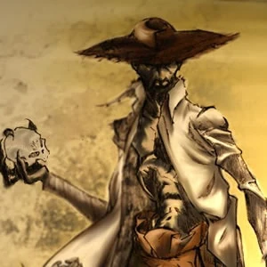

La leyenda de El Silbón es una de las más arraigadas en el folklore de los Llanos. Cuenta la historia de un joven malcriado que, al no recibir las vísceras de venado que deseaba para cenar, asesinó a su propio padre.
Tras el atroz crimen, su abuelo ordenó que lo azotaran, le lavaran las heridas con ají picante y lo soltaran a los perros hambrientos, no sin antes lanzarle una maldición que lo condenaría a vagar por la eternidad cargando los restos de su progenitor.
A diferencia de otros espantos, El Silbón posee rasgos físicos muy específicos que los llaneros han descrito por siglos:
El Silbón suele aparecer en las noches de lluvia o en épocas de sequía intensa. Se dice que llega a las casas, se sienta en el porche y comienza a contar los huesos uno a uno.
Si alguien en la casa lo escucha contar, no pasará nada; pero si todos duermen y nadie se percata de su presencia, al amanecer un miembro de la familia no despertará jamás.